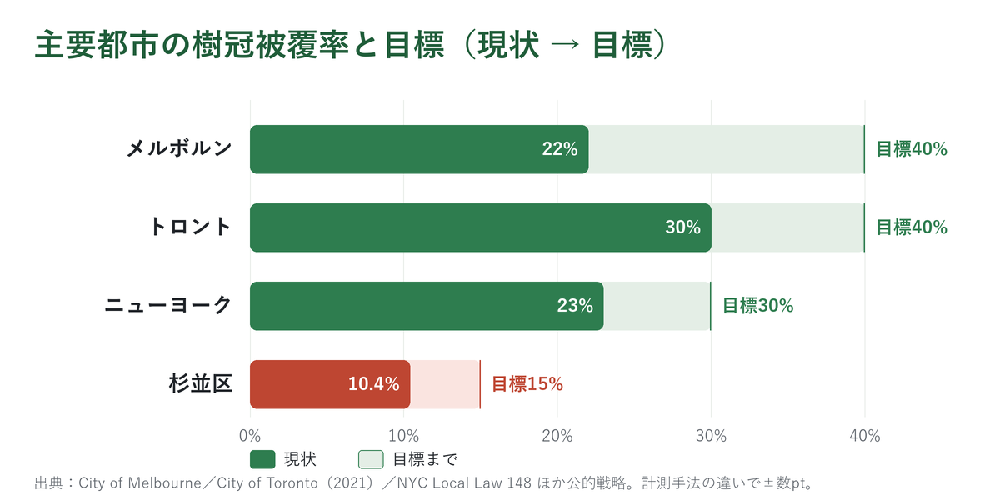
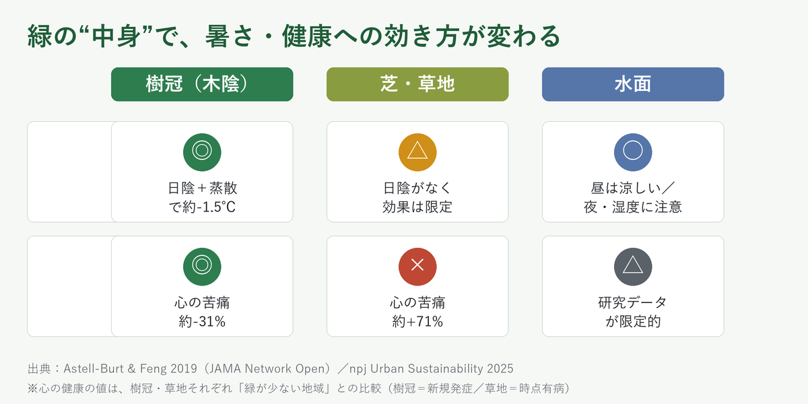
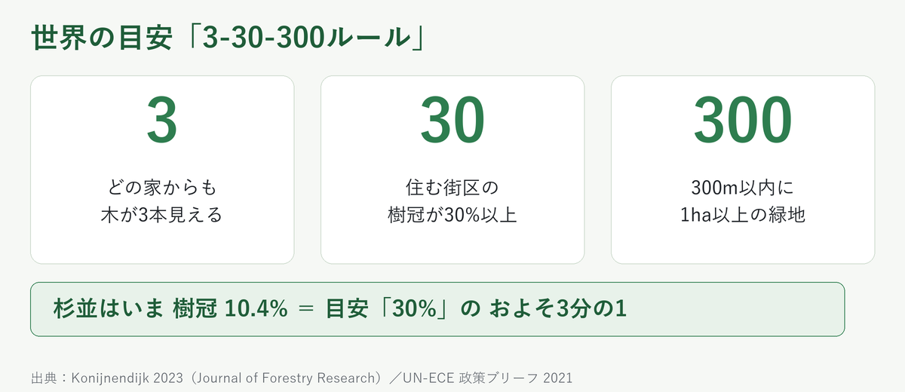

「樹冠被覆率」って、知っていますか？ 私はこの言葉を、増田氏の政策を通じて初めて知りました。みどりが大切なのはなんとなく分かる。でも本当に数値の裏づけはあるのか――気になって調べてみたら、これが面白い。同じ杉並区の緑も、どの“ものさし”で測るかで、結論が正反対になる のです。要点だけ5分でまとめます。
① 「樹冠被覆率」＝まちの“木陰”の割合
木の枝葉が、上から見て地面を覆っている割合のこと。「まちにどれだけ木陰があるか」を表す、世界共通の指標です。（※たまに見かける「樹幹 」は漢字の誤り。正しくは「樹冠 」＝枝葉）
② 杉並の木陰は10年で約4割減っている
東京大学の査読論文 によると、杉並区の樹冠被覆率は 2013年17.2% → 2022年10.4% （約−39.5% ）。これは23区で最大の減少 です。増田氏の言う「約4割減」は、データと一致していました。
③ でも「緑被率」で見ると、ほぼ横ばい
区が公式に使う「緑被率」「みどり率」は、ほとんど変わっていません。
緑被率：2012年 22.17% → 2022年 21.99%
みどり率：2012年 23.3% → 2022年 23.17%
同じ区・同じ10年で、木陰なら「4割減」、緑被率なら「横ばい」 。なぜ？――緑被率は木だけでなく芝・畑・屋上緑化 まで全部数えるからです。実際、区の「みどりの実態調査」によると、杉並では屋上緑化が増える一方、大きな木は約1割減。緑の“中身”が、木陰から芝・屋上へ入れ替わっていた のです。
④ “木陰”が特別な理由 — 暑さと健康
木陰は暑さに直接効きます。査読論文では樹冠を30%増やすと気温が約−1.5℃ 。熱中症の救急搬送は2024年97,578人→2025年は10万人超と過去最多です。
豪州の大規模研究では、樹冠30%以上の地域は心理的苦痛が約31%少なく 、逆に草地30%以上の地域は約71%多い （どちらも「緑が少ない地域」との比較）。木陰は暑さをやわらげ気持ちも休まる一方、日陰のない草地は逆に働きやすい。「緑なら何でもいい」のではなく、中身が木陰かどうか が効くのです。
緑被率だけ見ていると、この大事な違いが見えなくなる。「樹冠で測ろう」という主張には、ちゃんと科学的な裏づけがありました。
世界の主要都市は「30〜40%」を公的な数値目標 に掲げて動いています。40%（2040年） ・トロント 40%（2050年） ・ニューヨーク 30% （いずれも市の公式戦略／法）。10.4% ・増田氏が掲げる目標15% は、世界基準ではむしろ控えめ。15%は「ゴール」ではなく「第一歩」です。※この「15%」は杉並区の公式目標ではなく、増田氏が公式サイトで掲げた公約値 です（区の公式計画は今も緑被率が主指標）。

⑤ で、「みどりで稼ぐ」は本当に稼げる？
ここが一番のポイント。海外研究では「都市の木は投資に見合う」傾向が確認されています（トロントで投資1ドルあたり約1.35〜3.20ドルの便益）。ただしその多くは、税収のような“稼ぎ”ではなく、医療費や冷房代など“将来の出費を抑える節約” です。
大事な前提が2つ。 ①「樹冠を増やすと税収が伸びる」という直接の相関は、はっきり確認されていません （効果の多くは税収増ではなく医療費・電気代などの“節約”）。②杉並区に特化した「稼げる」試算も、まだ公的には存在しません 。住民には賃料・税負担の増加 にもなります（「グリーン・ジェントリフィケーション」。米農務省森林局の査読研究 Donovan 2021）。これは批判ではなく、住民を守る手立てを行政が別途あわせて用意しておくべき“宿題” として考えたい点です。
まとめ（第1本目）
「約4割減」は事実 。「樹冠で測るべき」も理にかなっている 。
でも「稼ぐ」は、正確には「将来の出費を抑える投資」 。杉並専用の試算はまだ無い。
今回の検証で、樹冠被覆率についてはだいぶ見えてきました。問題提起と方向性は骨太そう。次回は、実際に「稼ぐ」ことができるのかをまとめます。
→ 第2本目では「杉並は実際に稼げるのか」を、ある研究者（匿名）の試算で検証します
出典つきの詳細版を読む →
「樹冠被覆率」って、知っていますか？ 私はこの言葉を、杉並区で活動を続ける増田氏とのかかわりを通じて知りました。
超がつくド田舎の出身で、いまは東京に住んでいます。みどりがなんとなく大切だということは体感していましたが、本当に数値として裏づけがあるのかまでは知らなかった。だから、調べてみました。
1. そもそも「樹冠被覆率」って何？
樹冠被覆率 ＝ 木の枝葉が、上から見て地面を覆っている面積の割合
つまり「まちにどれだけ“木陰”があるか 」を表す数字です。英語では urban tree canopy cover（UTC）。アメリカ・カナダ・豪州・ヨーロッパの主要都市が当たり前に使う、緑の国際共通言語です。
ひとつ注意点。たまに「樹幹 （じゅかん＝木の幹）被覆率」と漢字を取り違えた例を見かけますが、正しくは「樹冠 （枝葉）」。増田氏の公式サイト も本人のSNSも、ちゃんと「樹冠」と書いています。「幹の太さ」と「枝葉の広がり」では話がまるで違うので、要注意やで。
2. 杉並の“木陰”は、10年で約4割消えている
増田氏が言う「杉並の木陰がここ10年で約4割減っている」は、本当なのか。さっそく一次データにあたってみます。
東京大学の研究チーム（寺田徹研究室）が衛星データを解析した査読論文（Shiraishi & Terada, 2024） によると、杉並区の樹冠被覆率はこう変化していました。
杉並区：2013年 17.2% → 2022年 10.4% 減少幅は −6.8ポイント 、割合にして 約−39.5%（およそ4割減）
これは 東京23区の中で最大の減少率
23区全体でも木陰は減っています（平均 9.2% → 7.3%、相対−20.6%）。でも杉並区は、その倍近いスピードで減っている 。10年足らずで、まちの木陰のおよそ4本に1本以上が失われた計算です。増田氏の言う「10年で約4割減」は、東大の査読論文と一致していました。
3. ところが「緑被率」で見ると、ほぼ横ばい
同じ杉並区の緑を、区が公式に使う 緑被率 というものさしで見ると、まったく違う絵が出てきます。区の「みどりの実態調査」 （5年ごとの公的調査）から、2012年と2022年を並べます。
緑被率：2012年度 22.17% → 2022年度 21.99% （相対 −0.8%）みどり率：2012年度 23.3% → 2022年度 23.17% （相対 −0.6%）
ほぼ横ばい。これだけ見れば「杉並の緑は守られています」と言えてしまいます。
同じ区・同じ約10年なのに、ものさしを変えるだけで結論が正反対になる。
これは誰かがウソをついているわけではありません。3つのものさしが「測っているもの」が違う から起きる現象です。
3つの「みどりのものさし」のちがい
ものさし 数えるもの 使う人 樹冠被覆率 木の枝葉だけ（＝木陰） 世界の主要都市（国際標準） 緑被率 木＋芝＋畑＋屋上緑化 日本（国土交通省） みどり率 緑被率＋水面＋公園広場 東京都・23区
緑被率とみどり率は「木以外の緑（芝・屋上・畑）や水面」まで一緒くたに数えます。だから――
木陰（樹冠）がごっそり減っても、代わりに芝生や屋上緑化が増えれば、緑被率の数字は下がらない
という“現象”が起きます。実際、杉並区では区の「令和4年度みどりの実態調査報告書」 によると、同じ時期に屋上緑化が約9,665m²増えた 一方、大きな木（幹の直径90cm以上の大径木）は742本→666本へ約1割減 。緑の総量は保たれても、その中身が、木陰から芝生・屋上へ静かに入れ替わっている 。これが数字のトリックの正体でした。
4. なぜ“木陰”が特別なのか — 暑さと健康
木陰は「暑さ」に直接効く
夏の暑さは、もう災害級です。総務省消防庁によると、熱中症の救急搬送は――
2024年（5〜9月）：全国 97,578人 （統計開始以来の過去最多）2025年（5〜9月）：全国 100,510人 （ついに10万人を突破し記録更新）
樹木は「日射をさえぎる日陰」と「葉から水を蒸発させる蒸散」の両方で気温を下げます。査読論文（npj Urban Sustainability 2025） では、樹冠を10%増やすと約−0.8℃、30%増やすと約−1.5℃ 。芝生だけの緑地より2〜4倍冷えます。医学誌 The Lancet （2023） は、すべての都市が樹冠30%を達成すれば、夏の暑さによる早すぎる死の約3分の1が防げる と推計します。
「木」と「芝」では健康効果が逆になる
私がいちばん驚いたのはここ。豪州の大規模研究（JAMA Network Open 2019、約4万7千人） です。
樹冠が30%以上ある地域 に住む人は、樹冠が少ない地域（1割未満）の人にくらべ、心理的苦痛を新たに抱える割合が約31%低い 。逆に草地が30%以上の地域 では、草地が少ない地域にくらべ、心理的苦痛を抱える人が約71%も多い 。なぜ逆になるのか。研究者は、木陰は強い日ざしや暑さをやわらげ、木立のある場所が散歩や人とのふれあいを誘い、緑そのものに気持ちを回復させる働きがある からだと見ています。一方で、芝生だけの開けた草地は日陰がなく暑くなりやすいうえ、こうした「回復」や「交流」を生みにくい ため、かえってストレスにつながりやすい、と考えられています。
※厳密には、樹冠の数字は「6年間の新規発症 （incident）」、草地の数字は「調査時点での有病 （prevalent）」と、比べ方や基準値（0〜9%／0〜4%）が完全に同一ではありません。それでも「樹冠と草地で効き方が逆」という対比そのものは、同一研究のなかで明確に示されています。
「緑を増やす」だけでは足りない。それが木陰（樹冠）かどうか が健康を左右する。緑被率だけでは、この決定的な違いが抜け落ちます。「樹冠で測るべき」という増田氏の問題提起には、科学的な裏づけがありました。

5. 世界の目安「3-30-300ルール」— 杉並はどこに？
緑の「適量」の国際的な目安が 3-30-300ルール 。研究者コニネンダイクが提唱しました。
3 ：家・職場・学校から木が3本以上 見える30 ：住む街区の樹冠被覆率が30%以上 300 ：最寄りの良質な緑地まで徒歩300m以内
査読論文（Konijnendijk 2023） で根拠が整理され、国連欧州経済委員会（UN-ECE）の政策ブリーフ でも参照されています。
杉並区の樹冠被覆率 10.4% は、国際的な目安「30%」の、およそ3分の1
ただし「30%」は理想の到達目標で、世界中が達成しているわけではありません。とはいえ、これは研究者の理想論ではなく、欧米の主要都市が公的な戦略文書で具体的に掲げている数値目標 でもあります。
アメリカの都市林専門NPO（American Forests）も、かつては全米一律で「40%」を推奨していました（現在は密度・気候別の個別目標へ転換）。つまり世界の主要都市は「30〜40%」を公的に掲げて動いている 。杉並の現状10.4%・増田氏が掲げる目標15% は国際標準から見れば控えめで、15%は「ゴール」ではなく「最低限の第一歩」 ――密集する杉並での現実的な刻み方、と私は受け止めました。
この「15%」はどこから？ 目標15%は
杉並区の公式目標ではありません 。
増田氏が公式サイト に公約として掲げた数値で、水準自体は、American Forests の「密集都市は15%前後を目安に」という考え方とも整合します。

6. 表現についての留意点 —「国連が認めた指標」？
検証を進めるなかで、増田氏の発言にも、聞き手にひとつ補助線を入れておいたほうがよい箇所がいくつかありました。たとえば、樹冠被覆率について「国連機関の事業の基準にも採用」という紹介。方向としては間違いではないのですが、正確には少しニュアンスが違います。
この事業はFAO（国連食糧農業機関）と米国の民間財団が共同運営 する「Tree Cities of the World」。「国連単独」ではない。
樹冠被覆率は「認められた指標」だが、樹木の本数でも％でもよい任意の指標 。
特定の数値（例：30%）の達成が認定条件ではない。
つまり「国連が定めた合格ライン」ではなく「共同事業で認められた指標のひとつ 」。重要な指標ですが「世界で唯一の正解」ではない、と冷静に押さえます。
増田氏も理解はされていると思いますが、討論のなかでは割愛されているので、あえて自分の理解の整理と、読者のためにも、ここで補助線を引いておきたいと思います。
7. では「みどりで稼ぐ」は本当に稼げるのか
「都市の木は投資に見合う」は、おおむね支持される
過去の研究を網羅的に集めて分析した研究（系統的レビュー：Song ほか 2018） では、26本中22本で便益が費用を上回り ました（平均5.43倍、中央値2.72倍）。ただし研究ごとに数え方が違い単純比較は不可。トロントの試算 でも投資1ドルあたり約1.35〜3.20ドルの便益 （前提により幅あり）。
でも「樹冠を増やす → 区の収入が伸びる」は、まだはっきりしない
大事な区別です。じつは「樹冠被覆率を増やすと税収（区の収入）が伸びる」という直接の相関は、明確には確認できていません 。便益の多くは、税収のような“稼ぎ”ではなく、将来の出費を抑える“節約” だからです。
暑さ・病気が減る → 医療費の節約
治水インフラを増やさずに済む → 防災コストの回避
冷房需要が下がる → 電気代の削減
つまり「みどりで稼ぐ」は、正確には「みどりで“将来の出費を抑える”賢い投資 」。しかも杉並区に特化した費用便益の試算は、現時点で公的に示されていません （海外研究の当てはめは独自試算で参考値どまり）。
「税収が伸びる経路」と、その“裏側”はセットで考える
税収がまったく動かないわけではありません。ひとつ確かな経路があります。緑化は地価を押し上げる ことが、複数の査読研究で示されています（米農務省森林局のメタ分析で樹冠1%増→住宅価格0.12〜0.21%上昇 、日本でも12都市で道路沿いの緑が地価を有意に上昇 ）。地価が上がれば固定資産税の課税ベースも広がり、税収は増えうる （※東京23区では固定資産税は東京都が課す都税で、都区財政調整を通じて区の財源にも回ります）。
問題は、その
地価上昇が、住民にとっては賃料や税負担の増加 にもなること。元の住民――とくに賃貸住まいや低所得世帯――が住み続けにくくなる現象は「
グリーン・ジェントリフィケーション 」と呼ばれ、
米農務省森林局の査読研究（Donovan ほか 2021） などで報告されています（同研究は「樹木は地価上昇要因の1.3%にすぎない」とも限定）。
これは「緑を増やすな」という批判ではありません。杉並にはUR賃貸・木造アパート・公営住宅も多く、地域内の格差は無視できない。
だからこそ、家賃補助や住み続けられる仕組みといった住民を守る手立てを、行政が“別の宿題”として最初からセットで検討しておく 必要がある――そこまで考えて初めて「みどりで街全体が潤う」と言えます。
8. 第1本目のまとめ
杉並の木陰は10年で約4割減 （17.2%→10.4%、−39.5%）。23区最大 。増田氏の「約4割減」は事実 。
緑被率・みどり率はほぼ横ばい 。中身が木陰から芝・屋上に入れ替わったため。トリックでもウソでもない。
暑さ・健康に効くのは木陰 。「樹冠で測ろう」は理にかなう 。
ただし「みどりで稼ぐ」は「将来の出費を抑える投資」 と読むのが正直。杉並専用の試算はまだ無く 、副作用への配慮も必要。
今回の検証で、樹冠被覆率についてはだいぶ見えてきました。問題提起と方向性は、骨太な政策でありそうです 。次回は、実際に「稼ぐ」ことが本当にできるのか――をまとめていきたいと思います。
出典一覧（公的機関・査読論文・評価の確立した資料）
Shiraishi & Terada (2024) Urban Forestry & Urban Greening （Q1査読論文、論文番号128331、東大 寺田研） — ScienceDirect
杉並区「令和4年度みどりの実態調査報告書」（緑被率21.99%・みどり率23.17%／屋上緑化+9,665m²・大径木742→666本） — 杉並区
杉並区「平成24年度みどりの実態調査報告書」（緑被率22.17%・みどり率23.3%） — 杉並区
総務省消防庁「熱中症情報」（2024年97,578人／2025年100,510人） — 消防庁
npj Urban Sustainability (2025) 樹冠と気温 — Nature Iungman et al. (2023) The Lancet 欧州93都市 — Lancet
Astell-Burt & Feng (2019) JAMA Network Open — JAMA
Konijnendijk (2023) 3-30-300ルール J. Forestry Research — PMC
City of Melbourne「Urban Forest Strategy」（22%→40%＠2040） — melbourne.vic.gov.au
City of Toronto「Actions to Reaffirm Toronto's Tree Canopy Target」(2021、40%＠2050) — toronto.ca
NYC Comptroller / NYC Urban Forest Plan（Local Law 148で30%を法定化） — comptroller.nyc.gov
District of Columbia (DOEE)「Urban Tree Canopy Plan」（35%→40%＠2032） — doee.dc.gov
City of Seattle「Urban Forest Management Plan」／Canopy Cover Assessment（28%→30%＠2037） — seattle.gov
City of Vancouver「Urban Forest Strategy」（23%→30%＠2050） — vancouver.ca
Greater London Authority「London Urban Forest Plan」（現状約21%から+10%＠2050） — london.gov.uk
City of Sydney「Urban Forest Strategy」（15.5%→23%＠2030→27%＠2050） — cityofsydney.nsw.gov.au
ACT Government「Canberra's Living Infrastructure Plan」（30%樹冠等＠2045） — environment.act.gov.au
Ajuntament de Barcelona「Trees for Life: Master Plan 2017–2037」（約25%→30%） — ajuntament.barcelona.cat
UN-ECE 政策ブリーフ（3-30-300を参照） — unece.org
Song et al. (2018) 系統的レビュー Urban Forestry & Urban Greening — ScienceDirect
TD Economics (2014) Toronto Urban Forests — TD
Siriwardena, Boyle, Holmes & Wiseman (2016)「The implicit value of tree cover in the U.S.」Ecological Economics 128（米農務省森林局・hedonicメタ分析。樹冠1%増→住宅価格0.12〜0.21%上昇） — research.fs.usda.gov
Springer Environmental and Resource Economics (2023) 日本12都市のhedonic分析（道路沿いの緑が地価を上昇） — Springer
Donovan et al. (2021) green gentrification Forest Policy & Economics （米農務省森林局・査読／樹木は地価上昇要因の1.3%） — PMC
本記事は、2026年時点の公開情報・査読論文をもとに、会計士としてデータに基づいて確かめた中立的な検証です。特定の候補・政党を推進または否定する目的のものではありません。検証できなかった点は「未確認・独自試算」と明記しています。情報は更新されうるため、最新の一次情報もあわせてご確認ください。【連載 全2本・第1本目】